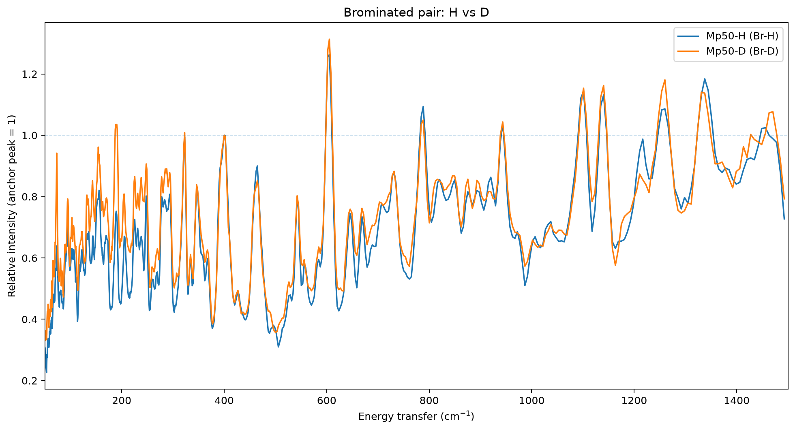
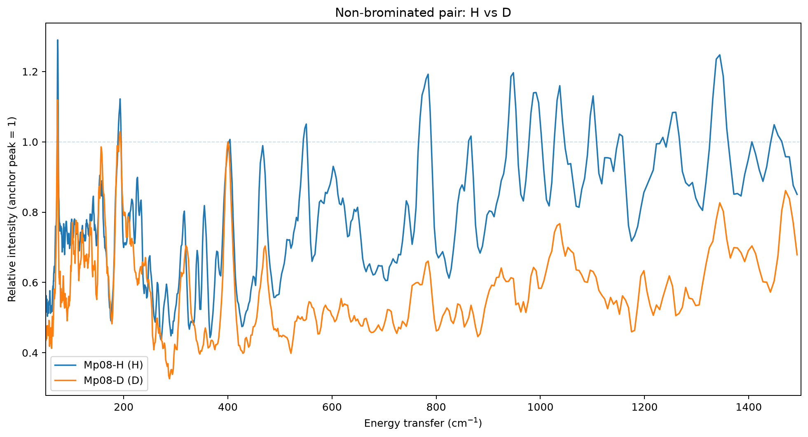
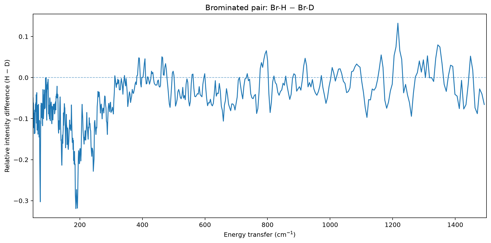
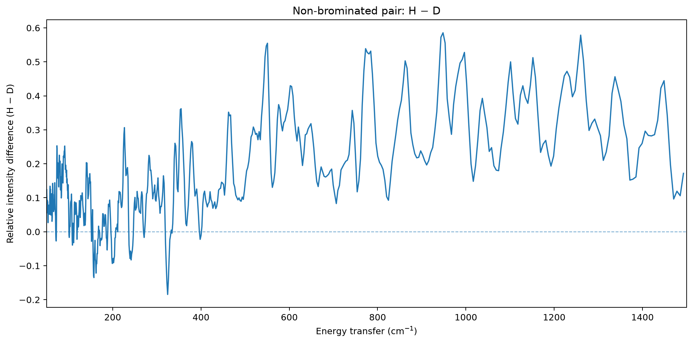

Gallium – Peter Sadler TOSCA spectra
Four gallium complexes: brominated/non-brominated × protiated/deuterated. Dashboard range: 50–1500 cm⁻¹.
Main comparison
Brominated pair

Non-brominated pair

These are the final spectra after smoothed aluminium subtraction, a light 3-point centred average, and a single normalization using the smoothed intensity at the common ~400 cm⁻¹ anchor.
What was done to the data?
.dat file unchanged in raw/.Cryostat: the short empty-cryostat spectrum is retained, and the exploratory 9- and 19-point averages are archived, but the cryostat is not subtracted from the final spectra.
Samples and normalization anchors
| Dataset | Compound | Mass (mg) | Anchor (cm⁻¹) |
|---|---|---|---|
| Br-H | Mp50-H | 171 | 400.098 |
| Br-D | Mp50-D | 97 | 400.098 |
| H | Mp08-H | 83 | 402.098 |
| D | Mp08-D | 43 | 400.098 |
A separate mass-normalised dataset is preserved for absolute-intensity comparison, but it is not part of the final relative-shape pipeline: the mass factor would cancel when each spectrum is divided by its own ~400 cm⁻¹ anchor.
Deuteration difference spectra
Show H − D difference plots
Brominated

Non-brominated

Positive values indicate greater relative intensity in the protiated spectrum after the common anchor normalization; negative values indicate greater relative intensity in the deuterated spectrum.
Data provenance
Every numerical stage is written to a separate CSV folder under processed/. The full transformation can be regenerated with python scripts/process_spectra.py.
01_aluminium_5pt— 5-point-smoothed empty-Al background02_al_subtracted— aluminium-subtracted samples03_mass_normalised— separate per-mg branch for absolute-intensity comparison04_three_point_smoothed— 3-point-smoothed aluminium-subtracted spectra05_final_anchor_normalised— final relative spectra after the single ~400 cm⁻¹ normalization06_difference— H − D difference spectraexploratory_cryo— cryostat tests, excluded from final pipeline